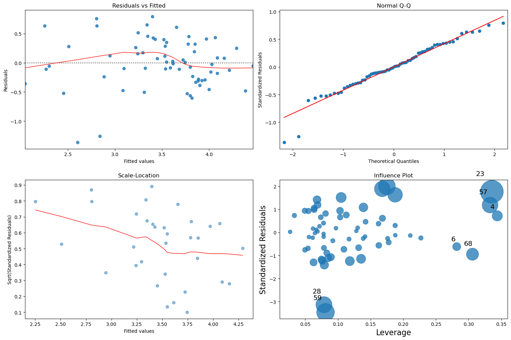

Analytical Insights into the Impact of Servant Leadership on Organizational Change Success
A Survey Based Analysis
The dataset utilized in this analysis was collected from a survey I conducted, aimed at assessing employees' perceptions of their managers' leadership styles and the effectiveness of change management within their organization. The responses provide insights into how different leadership behaviors are perceived and their correlation with successful change implementation. This survey is part of a broader research effort to understand the impact of leadership styles on change outcomes in the workplace. By analyzing this data, we aim to draw meaningful conclusions that can help organizations optimize their management practices for better change management results.
The Survey Data
- Demographics
- Age
- Gender
- Organisation type
- Industry
- Empowerment
- My manager gives me the information I need to do my work well.
- My manager helps me to further develop myself.
- My manager encourages his/her staff to come up with new ideas.
- My manager gives me the authority to take decisions which make work easier for me.
- Standing back
- My manager keeps himself/herself in the background and gives credits to others.
- My manager is not chasing recognition or rewards for the things he/she does for others.
- Accountability
- My manager holds me responsible for the work I carry out.
- My manager holds me and my colleagues responsible for the way we handle a job.
- Forgiveness
- My manager keeps criticizing people for the mistakes they have made in their work (r).
- My manager maintains a hard attitude towards people who have offended him/her at work (r).
- Courage
- My manager takes risks even when he/she is not certain of the support from his/her own manager.
- Authenticity
- My manager is open about his/her limitations and weaknesses.
- My manager is often touched by the things he/she sees happening around him/her.
- Humility
- My manager admits his/her mistakes to his/her superior.
- My manager learns from the different views and opinions of others.
- Stewardship
- My manager has a long-term vision.
- My manager emphasizes the societal responsibility of our work.
- Change Questions
- Significant changes within the organization occur frequently.
- Change is most often triggered by market trends, internal innovation, or regulatory changes.
- The organization is well-prepared to implement changes when they are needed.
- There is a formal change management process or team in place
- The organization communicates upcoming changes effectively to its employees
- Employees are involved in the change process within the organization.
- New changes are implemented effectively within the organization.
- Adequate training and support are provided to employees during periods of change.
- The organization assesses the impact of changes effectively.
- There are mechanisms in place for ongoing monitoring and evaluation of the outcomes of change.
- Employees adopt new changes introduced by the organization quickly.
- Resistance to change within the organization is understood and managed effectively.
- The organization learns from the outcomes of past changes.
- A high percentage of organizational changes are successful.
- Changes align with the long-term strategic goals of the organization.
Data Processing and Analysis
Data Analysis Overview
This document outlines the comprehensive data analysis performed using the survey data collected. The analysis covers various steps crucial for understanding the impact of perceived leadership styles on change management success within organizations.
Analysis Steps
- Data Loading and Cleaning:
Data was loaded from a CSV file, with preliminary steps to explore and clean the dataset. This included handling missing values, correcting data types, and trimming data to relevant columns.
- Exploratory Data Analysis (EDA):
Conducted an initial analysis to summarize the main characteristics of the data, using descriptive statistics and data visualization to understand the distribution and relationships between variables.
- Reliability Testing (Cronbach's Alpha):
Calculated Cronbach's alpha for different scales within the survey to assess the internal consistency and reliability of the items measuring specific constructs, such as empowerment and leadership qualities.
- Dimensionality Reduction (PCA and Factor Analysis):
Performed Principal Component Analysis and Factor Analysis to reduce the number of variables and identify underlying factors or components that explain the variance in the data related to perceived leadership and change management.
- Ordinary Least Squares (OLS) Regression:
Implemented OLS regression to model the relationship between employee perceptions of leadership behaviors and their views on the success of organizational changes. This included analyzing residuals to check for assumptions of linearity, homoscedasticity, and normality.
- Visualization of Model Diagnostics:
Visualized the results of the regression analysis, including residual plots, Q-Q plots, and influence plots to evaluate the quality and reliability of the regression model.
Outcomes
The outcomes of the analysis indicate a strong relationship between the servant leadership principles of empowerment and courage and the success of organizational change initiatives. The regression analysis shows that specific elements of servant leadership, particularly empowerment and courage, are positively correlated with higher success rates in managing change. The model reports an R-squared value of 0.628, suggesting that these leadership traits explain a portion of the variance in change management success. Additionally, the coefficients for certain variables positive and statistically significant, implying that enhancements in these leadership attributes contribute directly to better outcomes in change processes. This supports the theory that effective leadership, which prioritizes employee development and participation, fosters an environment conducive to successful change.
